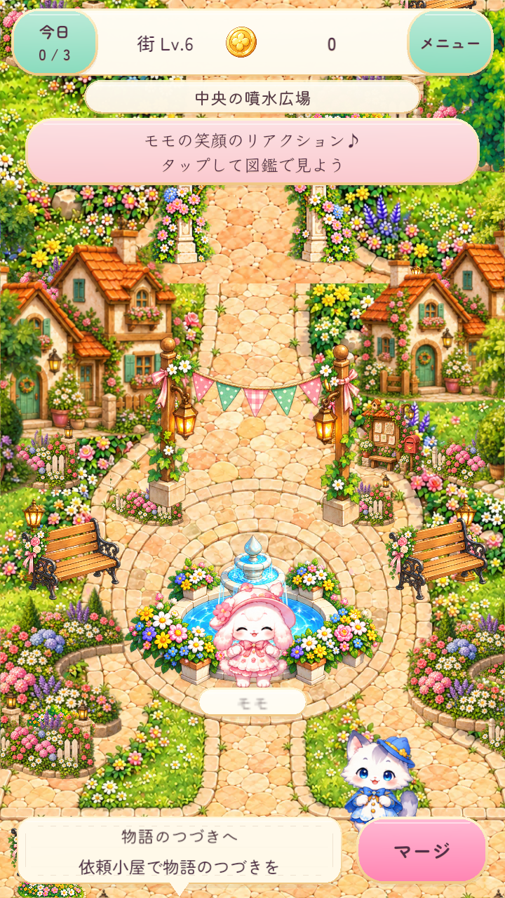
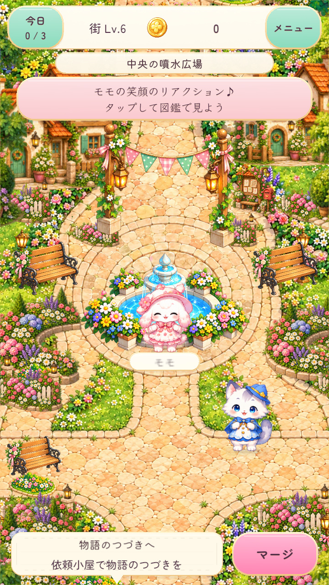
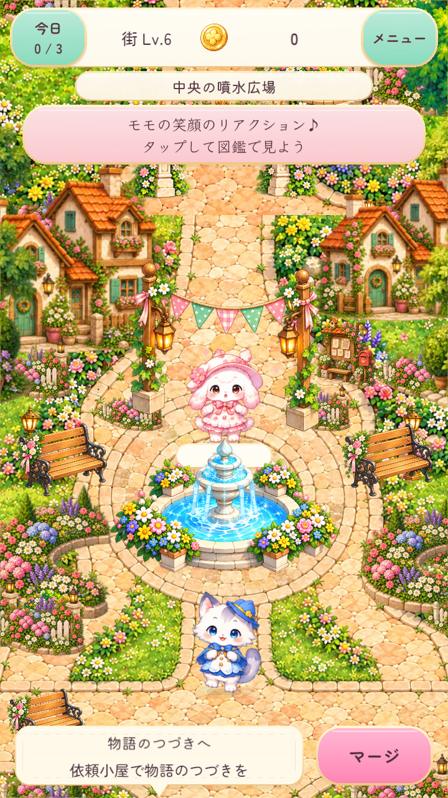

Before: only the new water layer OFF. Original fountain, original ripples, field, characters and camera retained. After: product code. Not a previous APK reconstruction or Pixel capture.



Pixel visibility, live depth transitions, temperature and performance acceptance pending.